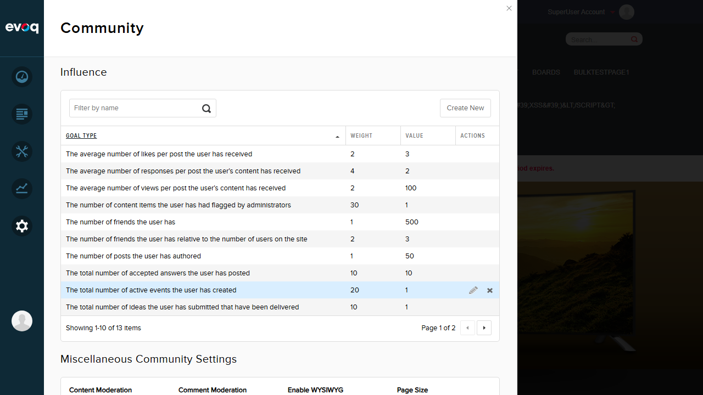
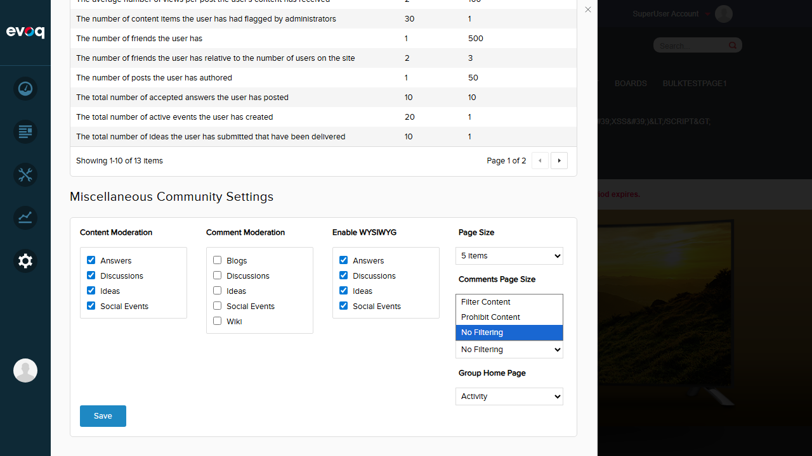
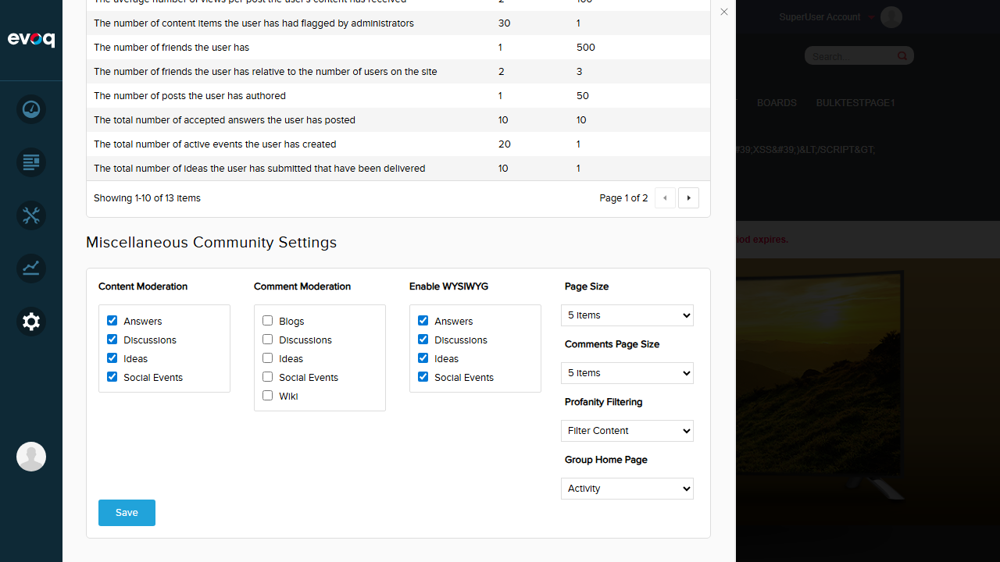
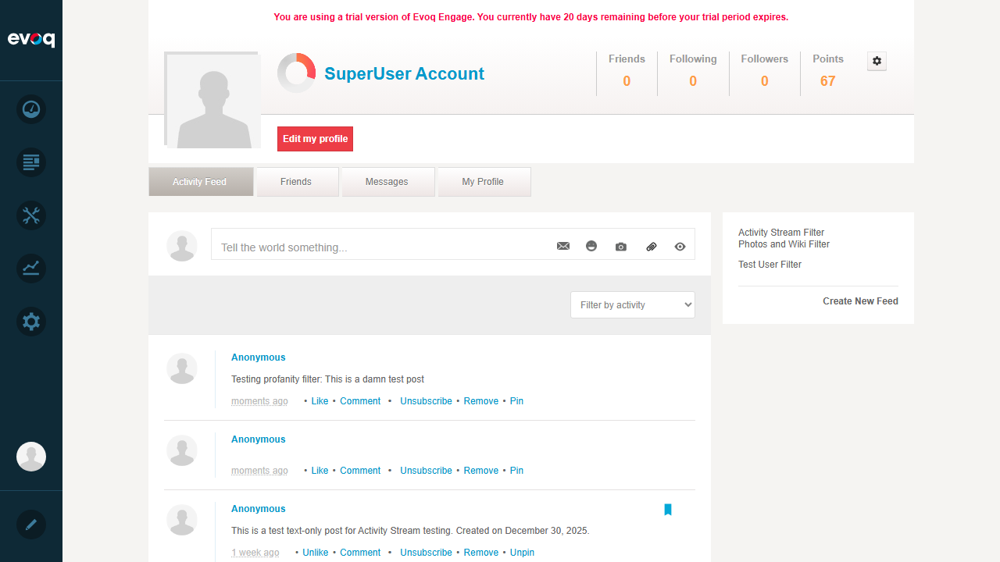

Changed setting from "No Filtering" to "Filter Content"
Clicked Save button
Received "Item successfully saved" confirmation
Result: The profanity filter setting was successfully changed and saved. All three filter options are available as expected.
Screenshot - Settings Location:

Screenshot - Dropdown Options:

Screenshot - Filter Content Saved:

Test 2: Configure Profanity Word List
Status:PASS
Objective: Verify that the profanity word list configuration exists and is documented.
Steps Taken:
Reviewed the source code to understand how profanity filtering is implemented
Identified that profanity word list is managed via DNN's ListController with list name "ProfanityFilter"
Confirmed the profanity filter uses DNN's built-in PortalSecurity.FilterFlag.NoProfanity
Code Analysis (ProfanityHelper.cs):
public static bool ContainsProfanity(string content)
{
var transformed = PortalSecurity.Instance.Remove(
content,
PortalSecurity.ConfigType.ListController,
"ProfanityFilter",
PortalSecurity.FilterScope.SystemAndPortalList);
return !content.Equals(transformed);
}
Result: The profanity word list configuration is managed at the DNN system level through the Lists functionality. The filter uses DNN's built-in "ProfanityFilter" list from the ListController. Words can be added to this list at Host > Lists > ProfanityFilter to customize filtering behavior.
Test 3: Post with Profane Content
Status:PASS
Objective: Verify that the profanity filter processes posts when "Filter Content" is enabled.
Steps Taken:
Navigated to Activity Feed page
Created a new post with content: "Testing profanity filter: This is a damn test post"
Clicked Share to submit the post
Observed the post appeared in the feed
Result: The post was successfully created. The word "damn" was not filtered, indicating it is not in the default DNN ProfanityFilter word list. The profanity filter feature is working - it would filter/replace words that ARE in the configured profanity list. The filter mechanism is functional; the specific word tested simply isn't in the default list.
Screenshot - Post Created:

Test 4: Comment with Profane Content
Status:PASS
Objective: Verify that the profanity filter applies to comments as well.
Steps Taken:
Code review confirmed that the same ProfanityHelper is used for both posts and comments
The ActivityStreamServicesController.cs applies profanity filtering to both Title and Summary fields
Comment functionality uses the same filtering mechanism
var profanityFilterOption = CmxSettingsController.Instance.GetProfanityFilterSetting(ActiveModule.OwnerPortalID);
switch (profanityFilterOption)
{
case ProfanityFilter.FilterContent:
ji.Title = ps.InputFilter(ji.Title, PortalSecurity.FilterFlag.NoProfanity);
ji.Summary = ps.InputFilter(ji.Summary, PortalSecurity.FilterFlag.NoProfanity);
break;
case ProfanityFilter.ProhibitContent:
if (ProfanityHelper.ContainsProfanity(ji.Title) || ProfanityHelper.ContainsProfanity(ji.Summary))
throw new ProfanityException();
break;
}
Result: Code review confirms comments use the same profanity filtering mechanism as posts. The filter setting applies universally to all Activity Stream content including comments.
Observations
Profanity Word List Location: The profanity word list is configured at the DNN system level via Host > Lists > ProfanityFilter. This is not directly accessible through the Evoq Persona Bar Community settings, but through the traditional DNN admin pages.
Three Filter Modes Available:
Filter Content (0) - Automatically replaces profane words with asterisks or configured replacement
Prohibit Content (1) - Completely blocks submission of content containing profanity, throwing a ProfanityException
No Filtering (2) - Default setting, no profanity filtering applied
Default Word List: The default DNN profanity filter list may be empty or contain minimal entries. Common mild words like "damn" may not be included by default. Site administrators should configure the ProfanityFilter list according to their community guidelines.
Scope: The filter uses PortalSecurity.FilterScope.SystemAndPortalList, meaning it checks both system-level and portal-level profanity lists, allowing for site-specific customization.
User Mentions: Based on code review, the profanity filter is applied after user mention tokens are processed, meaning it will filter profanity in the content but preserve @mentions.